Periodogram
How to read the periodograms
 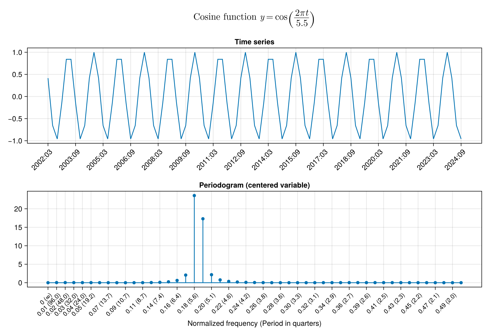
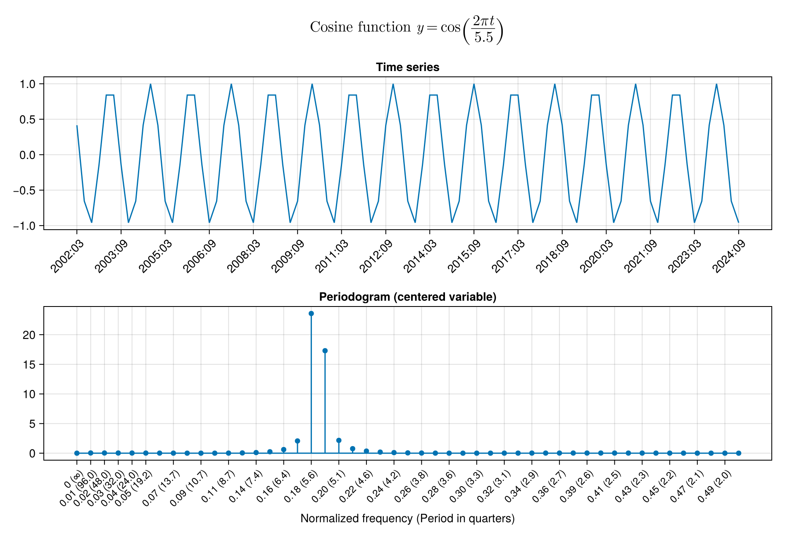
Raw periodograms


 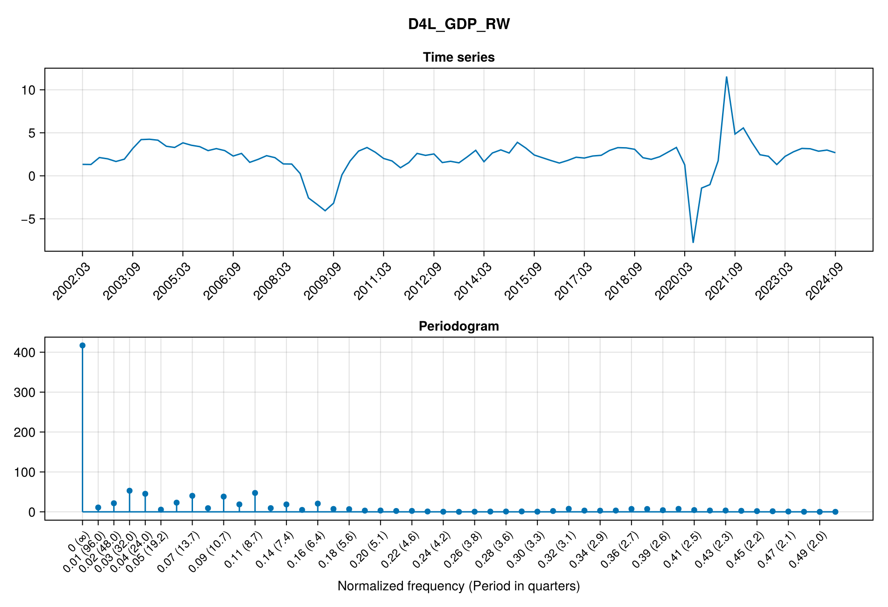 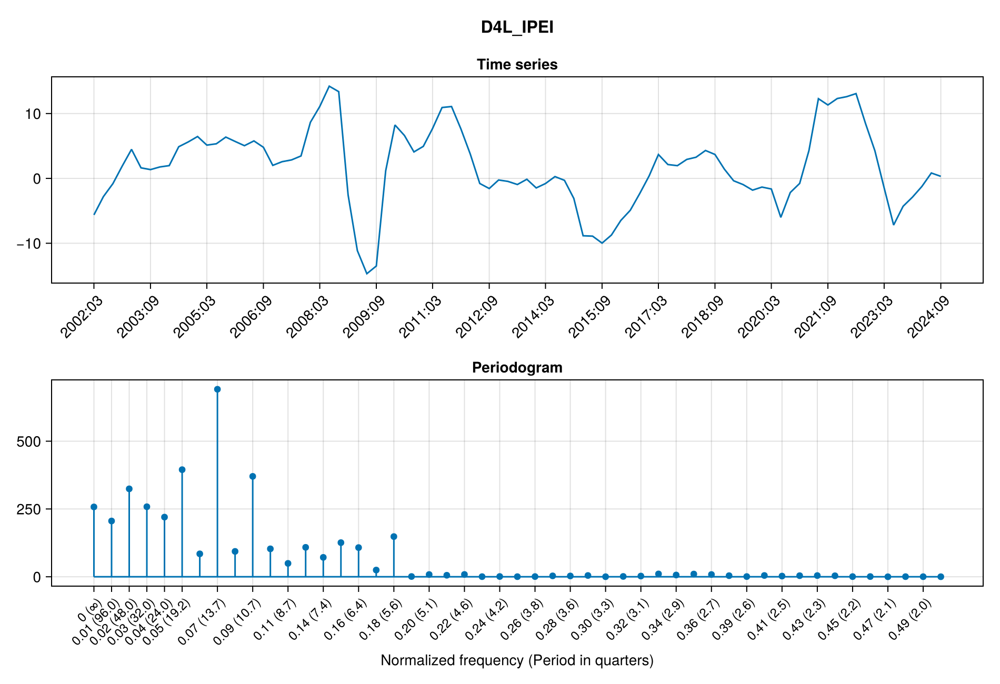 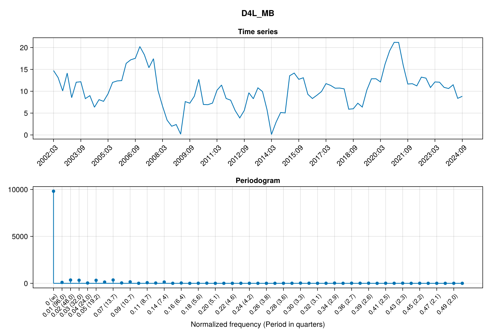
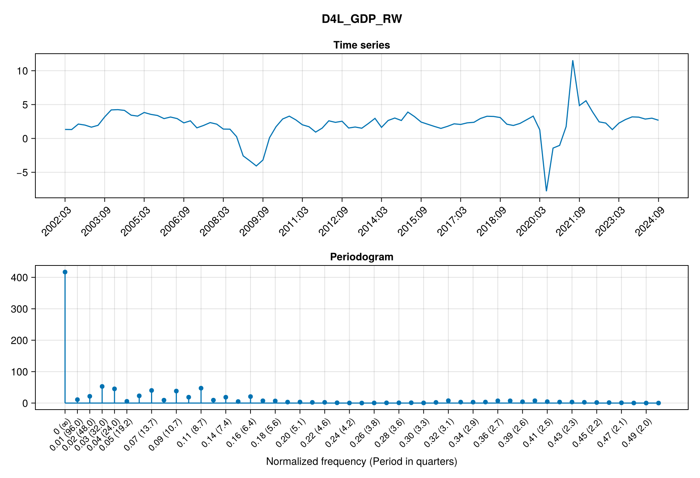 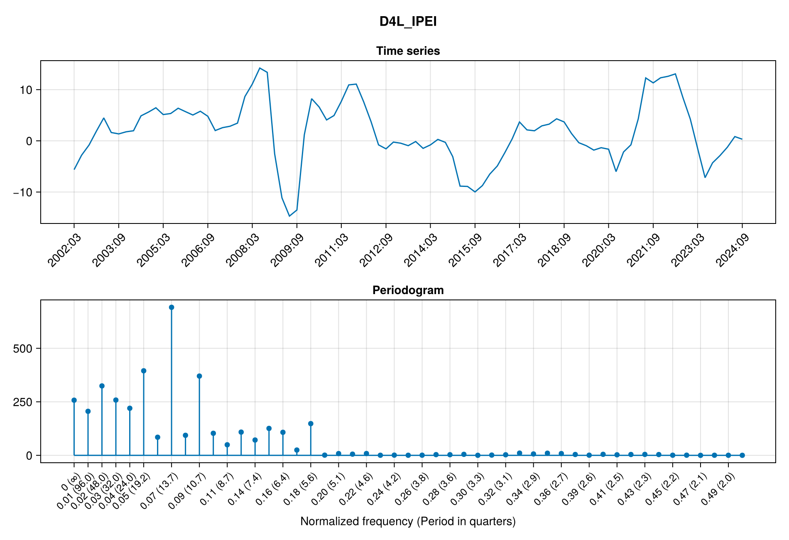 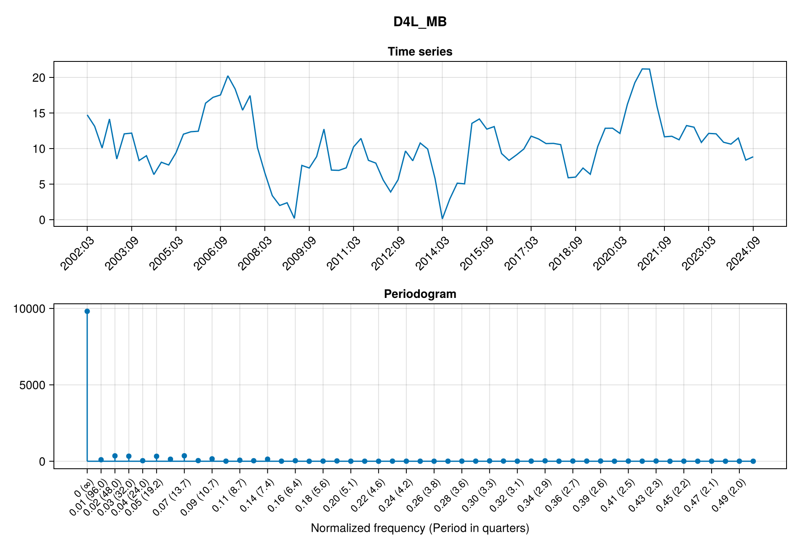 


Centered periodograms


 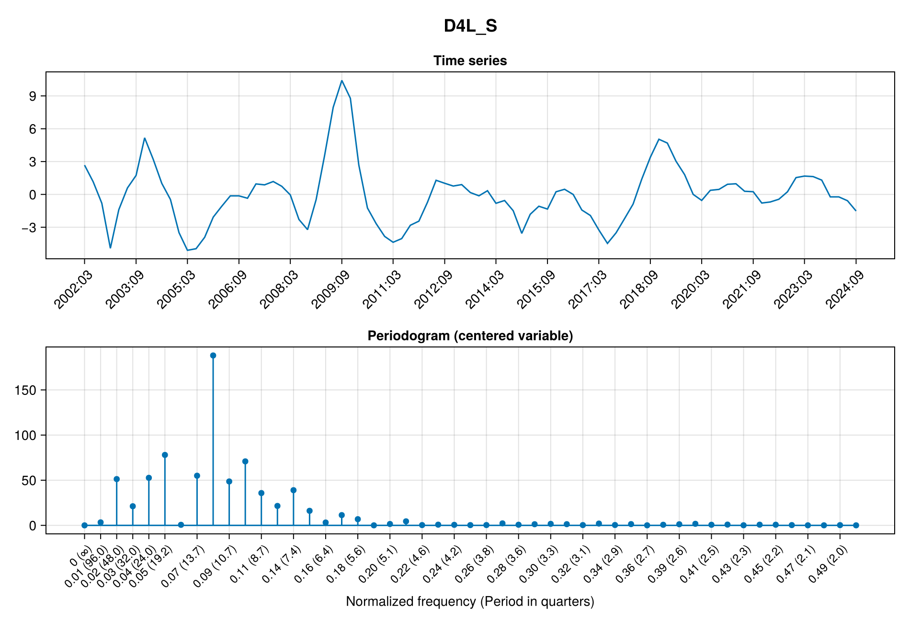
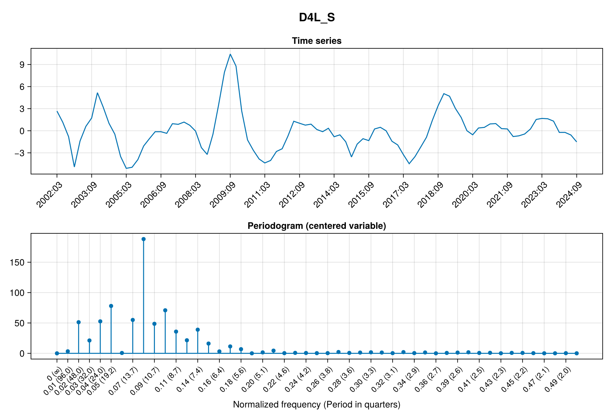 


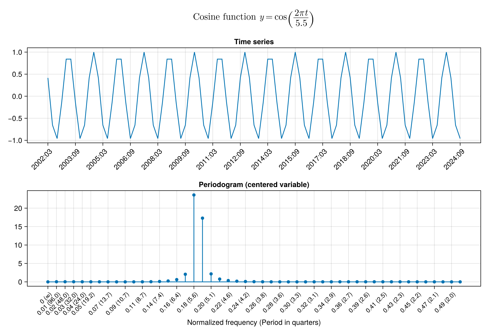
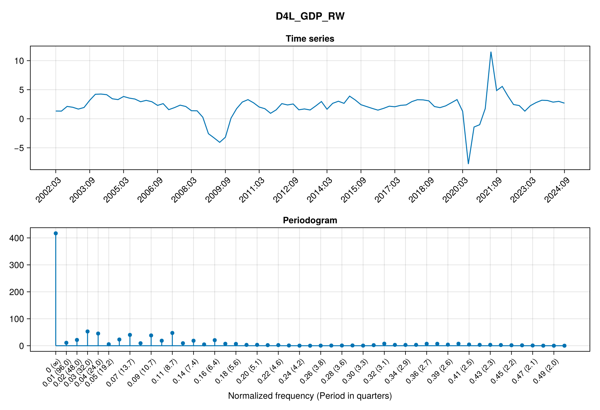 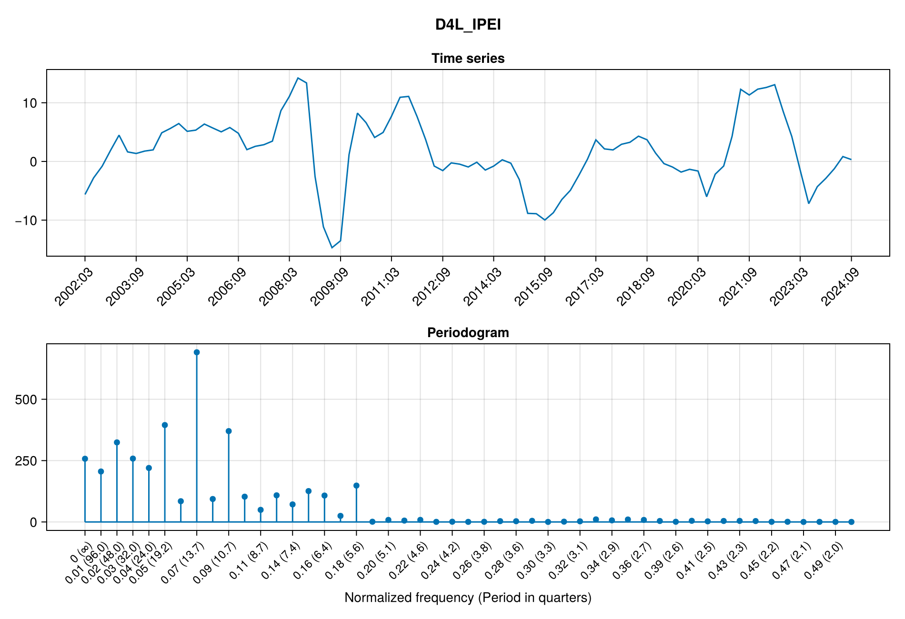 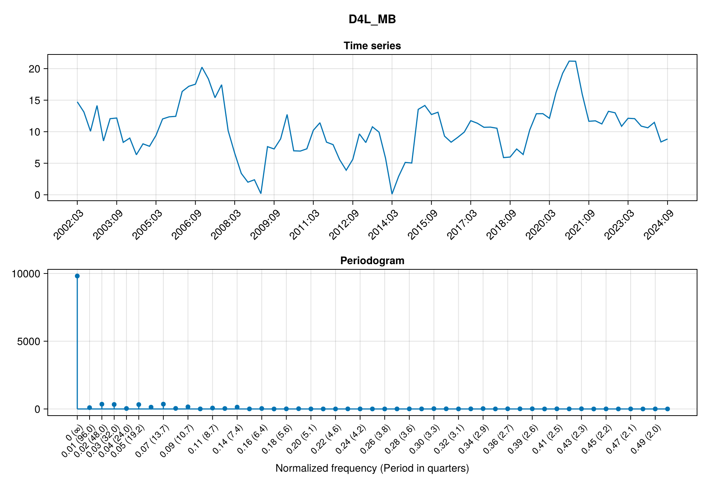
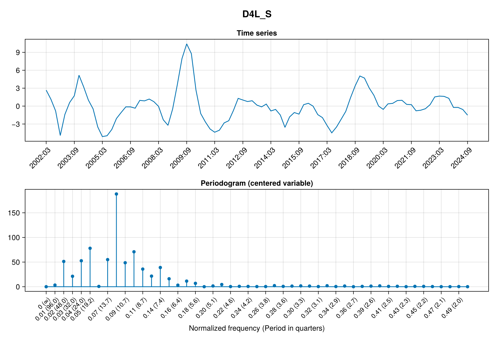
Settings
This document was generated with Documenter.jl version 1.8.0 on Wednesday 5 February 2025. Using Julia version 1.11.3.